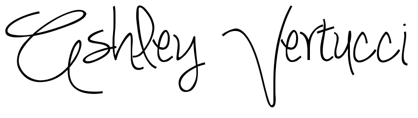

Open Source Technology Education
Graduate Program in Information Design & Technology
College of Arts & Sciences
State University of New York Polytechnic Institute
Utica, NY
In Partial Fulfillment
Of the Requirements for the
Master of Science Degree
Brought to you by
Ashley Vertucci

Table of Contents
2. Abstract
3. Project Overview / Description & Problem Statement
4. State of the Art: Tools for self-managed digital presence (obviously, this would like to something you wrote, not a magazine article)
5. Project: The Tae Kwon Do Club Web site (and this would like to a site you built, not some random club)
6. Assessment, evaluation and suggestions for future professionals
7. Biographical statement and Vita